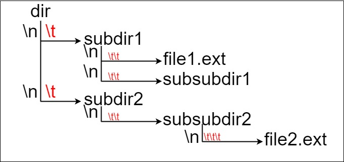
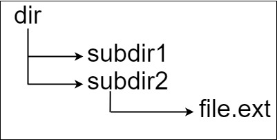
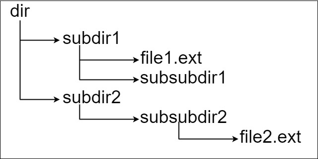

388. 文件的最长绝对路径
按 \n 分行逐行扫：\t 的个数是深度，len[深度] 记累计路径长度；文件（带 .）用 len[深度]−1 更新答案。
思路
- 一行 = 一个结点：前导
\t的个数就是它在树里的深度。 len[d+1] = len[d] + 名字长 + 1：从父层长度接过来，+1给下一层预留/；同层再来一个结点直接覆盖len[d+1]，兄弟互不影响。- 名字带
.的是文件：完整路径长 =len[深度] − 1（多算了一个分隔符），取最大。
图解
最优解
1class Solution {2 public int lengthLongestPath(String input) {3 int ans = 0;4 // len[d]：第 d 层结点的累计路径长度，含各级之间补的 '/'（len[0] = 0 是根的上层）5 int[] len = new int[input.length() / 2 + 2];6 for (String line : input.split("\n")) {7 if (line.isEmpty()) continue;8 int depth = 0;9 while (line.charAt(depth) == '\t') depth++; // 前导 \t 的个数就是深度10 String name = line.substring(depth);11 // 目录就覆盖本层记录；+1 是给下一层预留的 '/'12 len[depth + 1] = len[depth] + name.length() + 1;13 // 文件名带 '.'：len[深度] 多算了一个 '/'，减掉就是完整路径长14 if (name.indexOf('.') >= 0) ans = Math.max(ans, len[depth + 1] - 1);15 }16 return ans;17 }18}题目
假设有一个同时存储文件和目录的文件系统。下图展示了文件系统的一个示例：

这里将 dir 作为根目录中的唯一目录。dir 包含两个子目录 subdir1 和 subdir2 。subdir1 包含文件 file1.ext 和子目录 subsubdir1；subdir2 包含子目录 subsubdir2，该子目录下包含文件 file2.ext 。
在文本格式中，如下所示(⟶表示制表符)：
dir ⟶ subdir1 ⟶ ⟶ file1.ext ⟶ ⟶ subsubdir1 ⟶ subdir2 ⟶ ⟶ subsubdir2 ⟶ ⟶ ⟶ file2.ext
如果是代码表示，上面的文件系统可以写为 "dir\n\tsubdir1\n\t\tfile1.ext\n\t\tsubsubdir1\n\tsubdir2\n\t\tsubsubdir2\n\t\t\tfile2.ext" 。'\n' 和 '\t' 分别是换行符和制表符。
文件系统中的每个文件和文件夹都有一个唯一的 绝对路径 ，即必须打开才能到达文件/目录所在位置的目录顺序，所有路径用 '/' 连接。上面例子中，指向 file2.ext 的 绝对路径 是 "dir/subdir2/subsubdir2/file2.ext" 。每个目录名由字母、数字和/或空格组成，每个文件名遵循 name.extension 的格式，其中 name 和 extension由字母、数字和/或空格组成。
给定一个以上述格式表示文件系统的字符串 input ，返回文件系统中 指向 文件 的 最长绝对路径 的长度 。 如果系统中没有文件，返回 0。
示例 1：

输入：input = "dir\n\tsubdir1\n\tsubdir2\n\t\tfile.ext" 输出：20 解释：只有一个文件，绝对路径为 "dir/subdir2/file.ext" ，路径长度 20
示例 2：

输入：input = "dir\n\tsubdir1\n\t\tfile1.ext\n\t\tsubsubdir1\n\tsubdir2\n\t\tsubsubdir2\n\t\t\tfile2.ext" 输出：32 解释：存在两个文件： "dir/subdir1/file1.ext" ，路径长度 21 "dir/subdir2/subsubdir2/file2.ext" ，路径长度 32 返回 32 ，因为这是最长的路径
示例 3：
输入：input = "a" 输出：0 解释：不存在任何文件
示例 4：
输入：input = "file1.txt\nfile2.txt\nlongfile.txt" 输出：12 解释：根目录下有 3 个文件。 因为根目录中任何东西的绝对路径只是名称本身，所以答案是 "longfile.txt" ，路径长度为 12
提示：
1 <= input.length <= 104input可能包含小写或大写的英文字母，一个换行符'\n'，一个制表符'\t'，一个点'.'，一个空格' '，和数字。
题面取自力扣当前版本。
数据快照 2026-11-04。题面版权归力扣所有，本站点仅供本人学习使用，请勿对外发布。